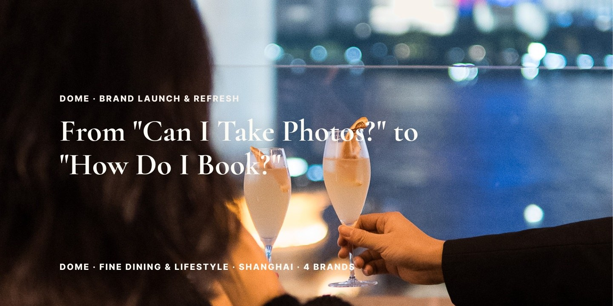
The Brief
Turned social attention into bookings across one new fine-dining launch and three established lifestyle brands.
Creative Assets
Main Page
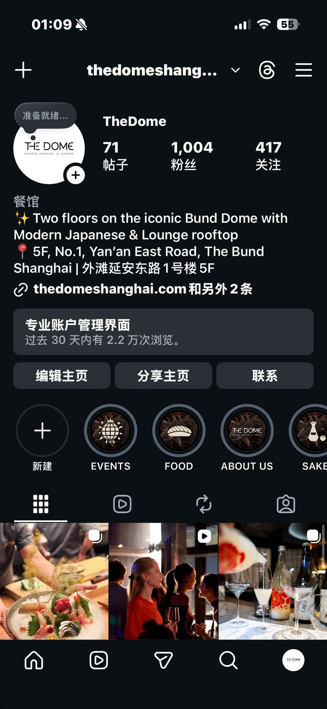
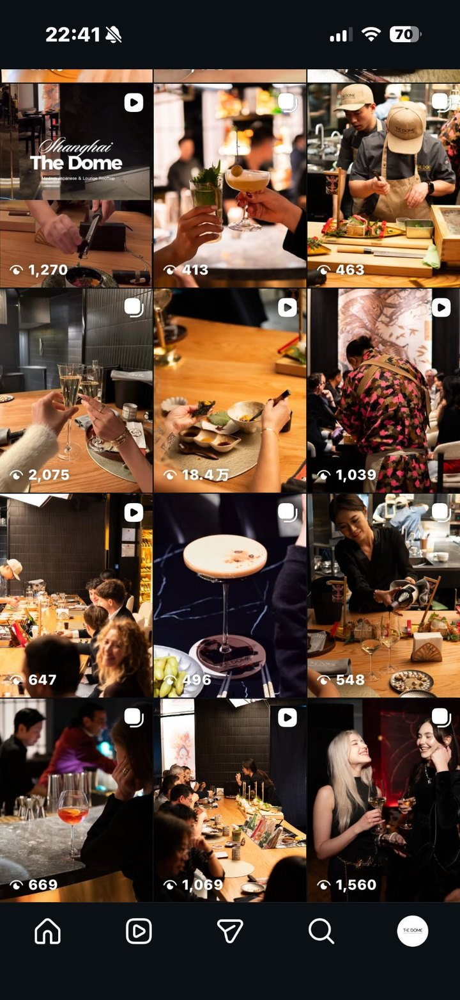
DOME · Modern Japanese fine dining & lounge
From zero as an experience-led lifestyle brand.
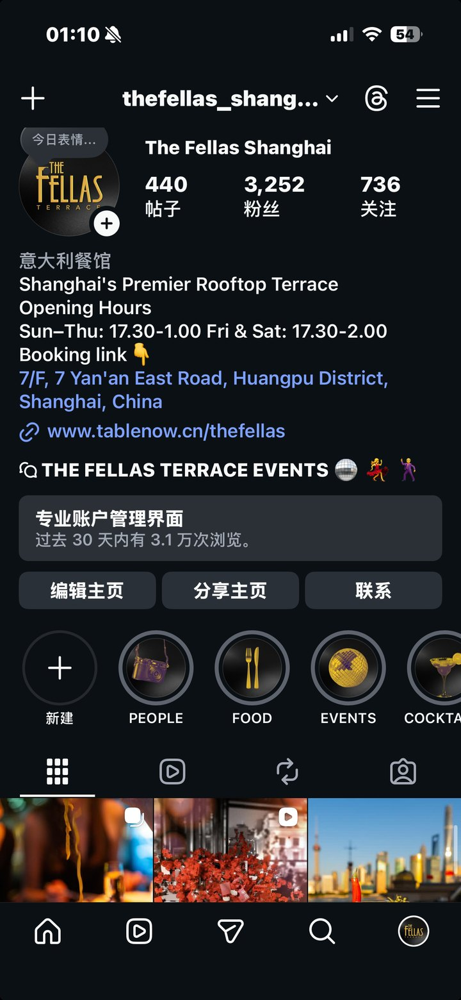
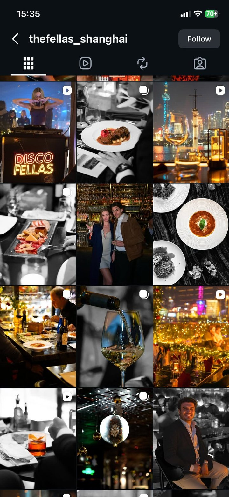
The Fellas · Italian steakhouse & late-night social
From party posts to lifestyle content.
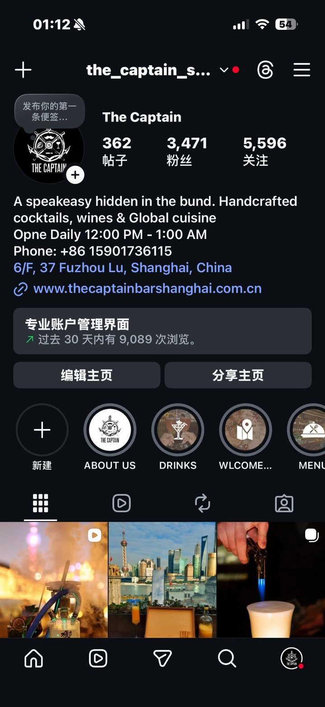
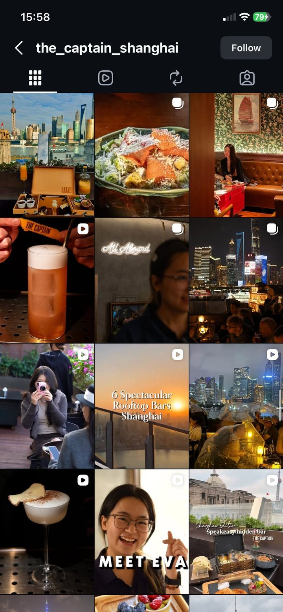
The Captain · Bund speakeasy & rooftop bar
From photo backdrop to occasion destination.
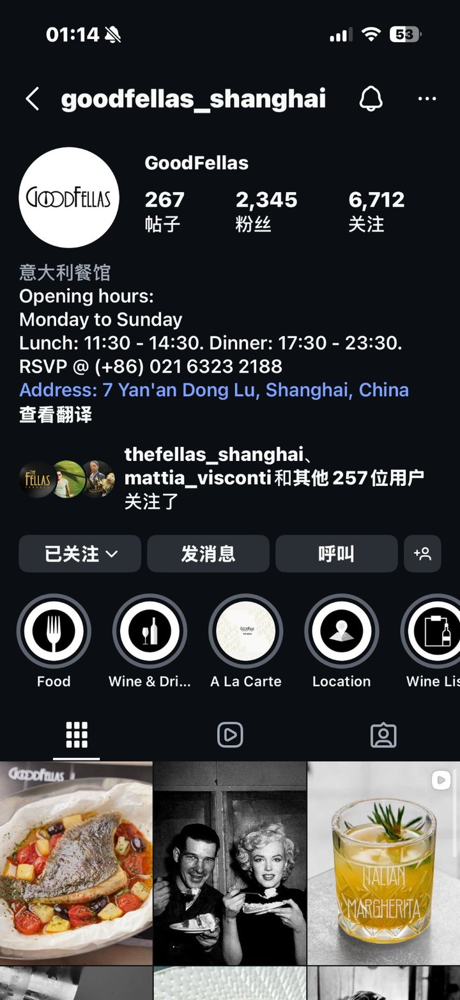
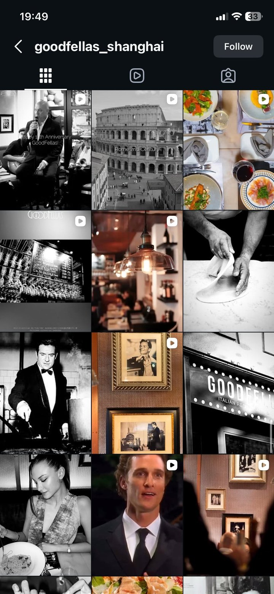
GoodFellas · Authentic Italian
Online trust through cultural storytelling.
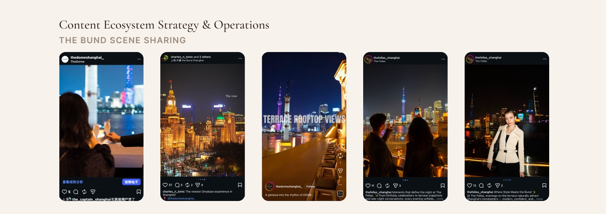
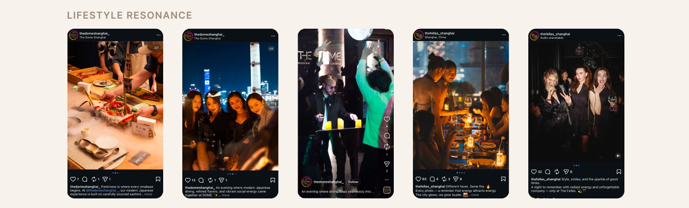
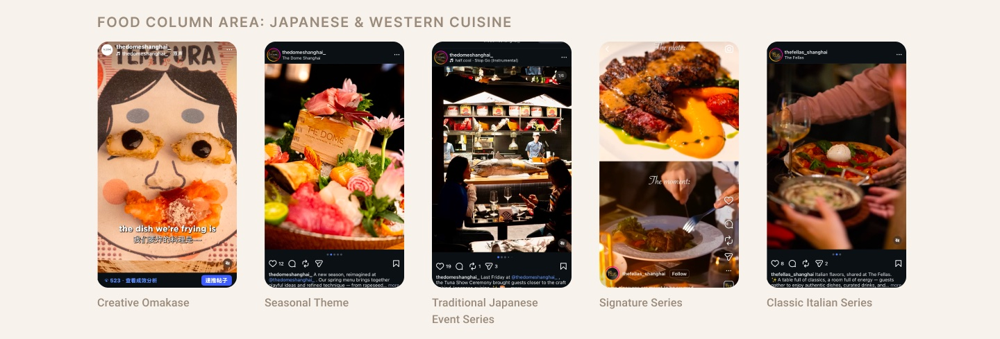
Account Highlights
DOME — Chef IP
The Fellas — Fashion Event
GoodFellas — Live Classic Jazz
The Captain — Photo Spot & Afternoon Tea
Tap a video to unmute
Creator Collaboration
Find the right people. Make them tell a scene, not read a menu. Map every post to its job.
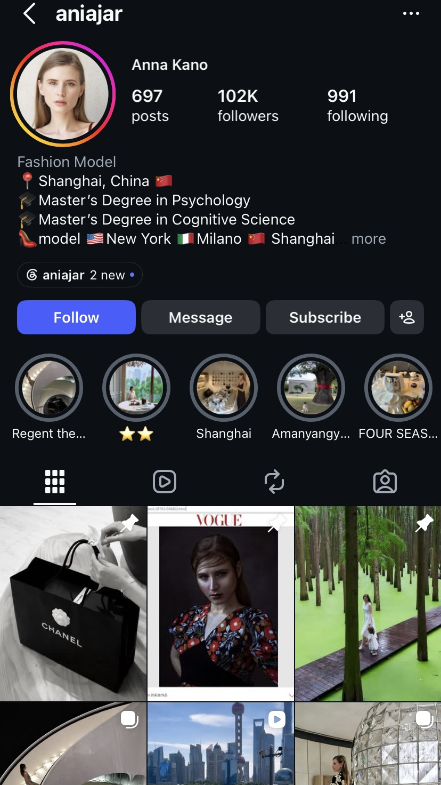
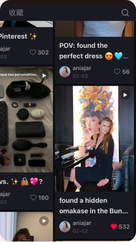
Tap the video to unmute
ANIAJAR | Cross-platform Creator Campaign
39.6K+ views · 2K+ engagements · 1.8K+ likes
Activated creator content across Instagram and REDNOTE, reaching overseas audiences and Shanghai-based lifestyle travelers through a Bund dining experience.
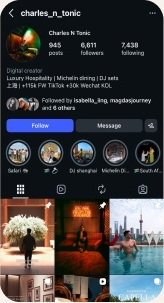
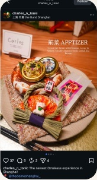
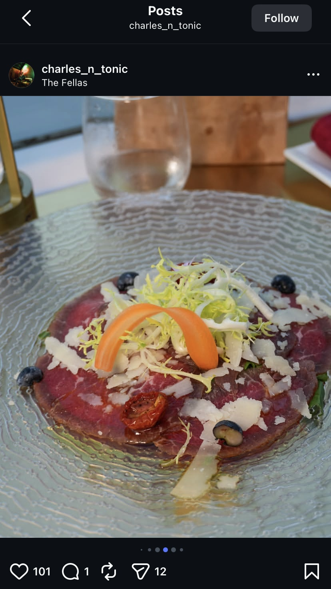
Tap a video to unmute
CHARLES_N_TONIC | Cross-platform Creator Campaign
8.7K+ Views · 268+ Engagements
IG: 7.9K Views · 2.82% ER
XHS: 850 Views · 5.29% ER
Partnered with a Shanghai lifestyle creator across Instagram & REDNOTE, using authentic dining storytelling to reach expat and lifestyle audiences and introduce DOME as a new Bund omakase destination.
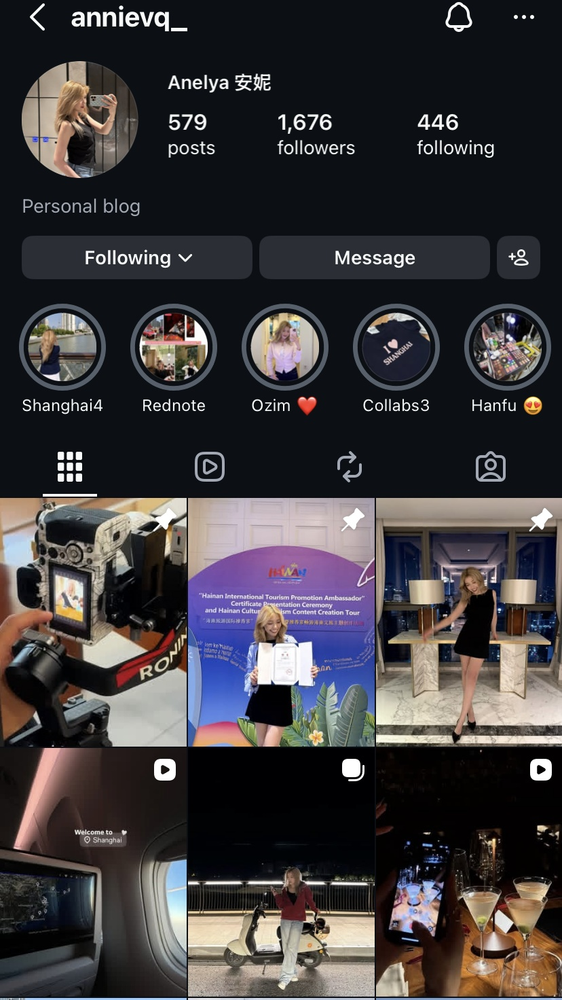
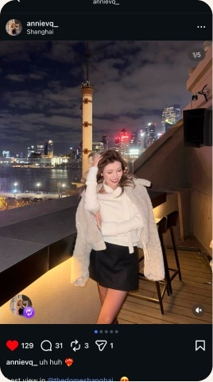
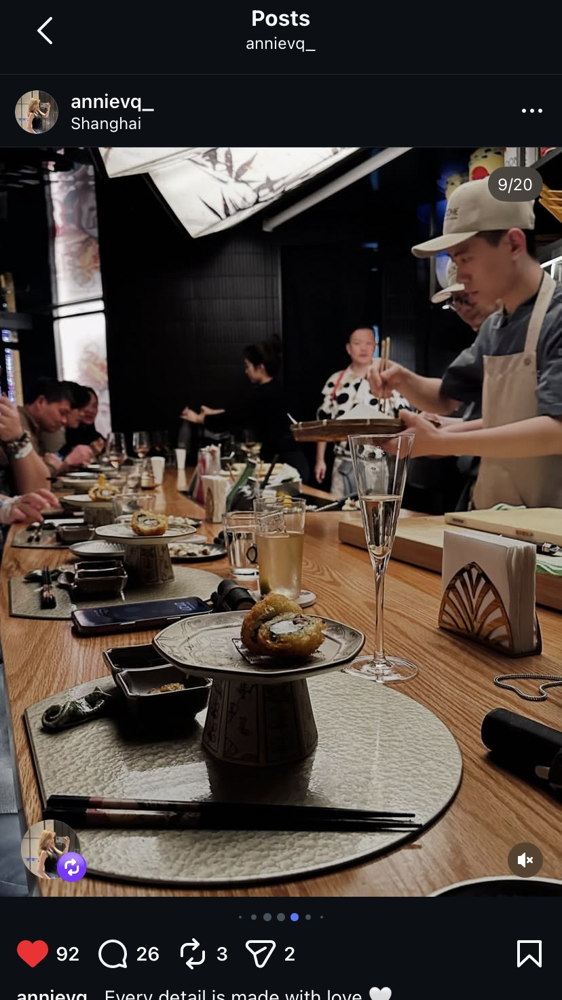
Tap the video to unmute
ANNI | Cross-platform Creator Campaign
2.1K+ Views · 157+ Engagements
IG: 1.3K Views · 9.76% ER
XHS: 842 Views · 6.41% ER
Creator-led content across Instagram & REDNOTE, targeting young expat and lifestyle audiences in Shanghai.
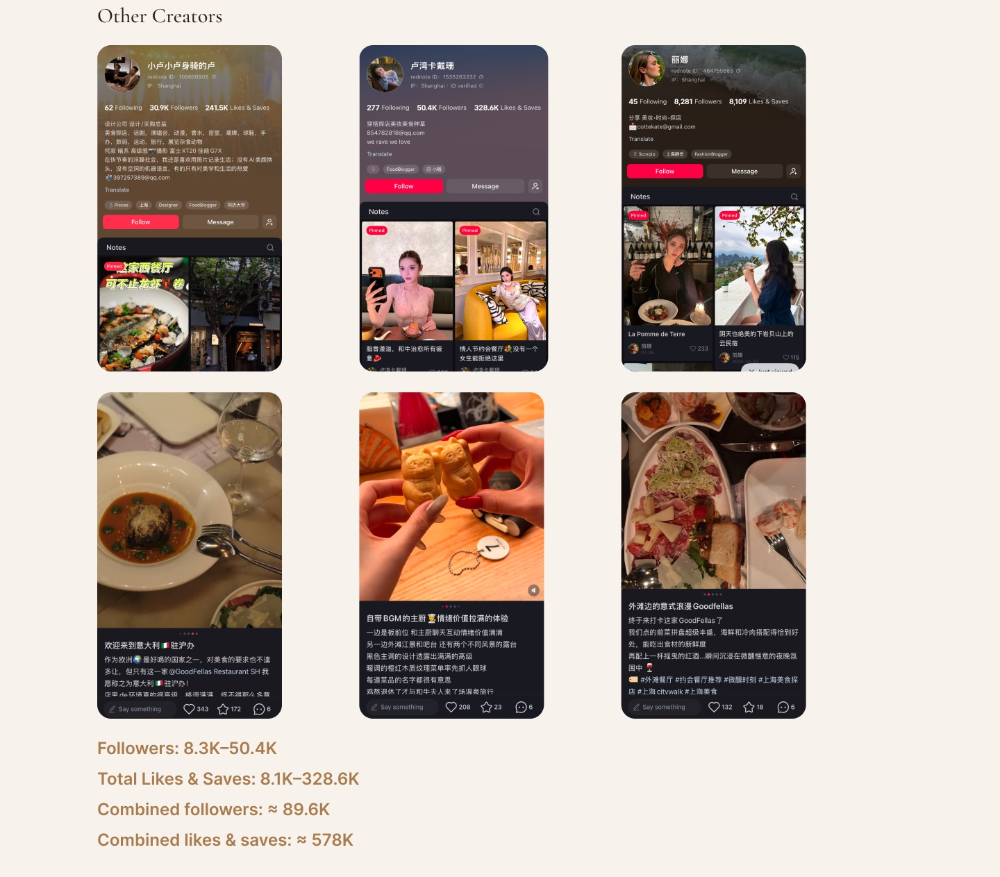
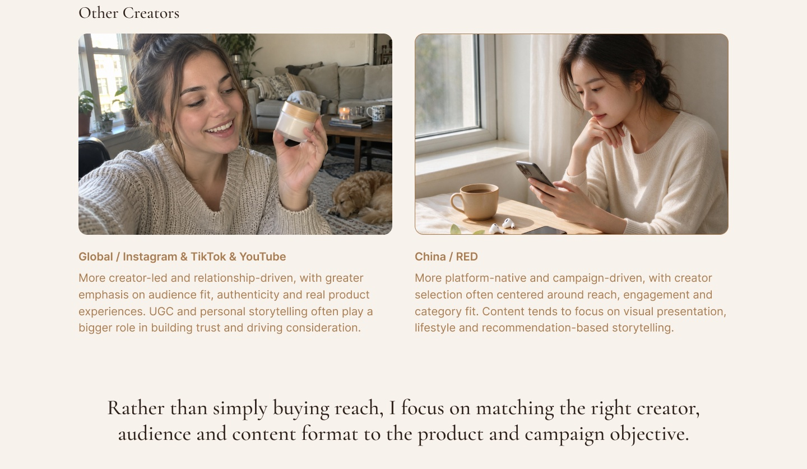
Let's discuss how we can build high-impact creative pipelines and lean validation frameworks for your next product launch.